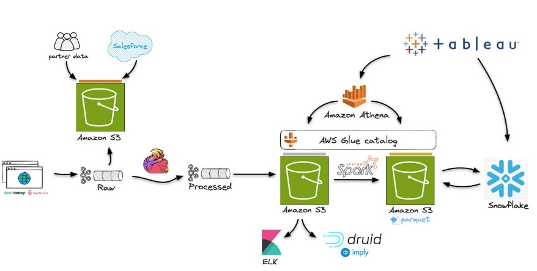
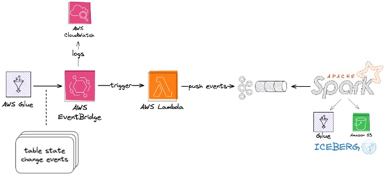
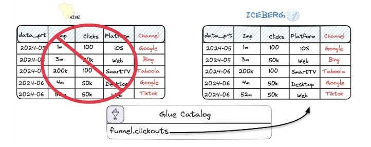

Blog 3
Melting The Ice - How Natural Intelligence Simplified a Data Lake Migration to Apache Iceberg
by Yonatan Dolan and Haya Axelrod Stern, Zion Rubin, Michal Urbanowicz on April 28, 2025 in Advanced (300), Analytics, AWS Glue, Best Practices, Case Study, Technical How-to Permalink
This article was co-authored by Haya Axelrod Stern, Zion Rubin, and Michal Urbanowicz from Natural Intelligence.
Many organizations choose data lakes for their flexibility and scalability in managing structured and unstructured data. However, migrating an existing data lake to a new table format like Apache Iceberg can present numerous technical and organizational challenges.
Natural Intelligence (NI) is a leader in the multi-category marketplace sector. With prominent brands like Top10.com and BestMoney.com, NI helps millions of people make smart decisions every day. Recently, NI embarked on a journey to transform its traditional data lake from Apache Hive to Apache Iceberg.
In this article, NI shares their journey, the innovative solutions they developed, and key lessons that can guide other organizations looking to follow a similar path. The content focuses heavily on practical challenges and how they were resolved during the transition, rather than the complex technical specifications of Apache Iceberg itself.
Why Apache Iceberg?
The data architecture at NI follows the Medallion Architecture (Bronze – Silver – Gold layers), described as follows:
-
Bronze layer: Raw, unprocessed data collected from various sources, stored in its native format in Amazon Simple Storage Service (Amazon S3) and ingested via Apache Kafka brokers.
-
Silver layer: Contains cleaned and enriched data, processed using Apache Flink.
-
Gold layer: Stores analytics-ready datasets designed for Business Intelligence (BI) and reporting. Data in this layer is generated through Apache Spark pipelines and consumed by services such as Snowflake, Amazon Athena, Tableau, and Apache Druid. Data is stored in Apache Parquet format, with AWS Glue Catalog responsible for metadata management.

While this architecture met NI’s data analytics needs, it lacked the flexibility required for a truly open and adaptable data platform. The Gold layer could only work with query engines that supported Hive and the AWS Glue Data Catalog. Although Amazon Athena could be used, for Snowflake, NI had to maintain a separate catalog to query external tables. This issue made evaluating or adopting alternative tools and engines difficult—unless they wanted to duplicate data, rewrite queries, or perform costly catalog synchronizations. As the business scaled, NI needed a data platform that could support multiple different query engines simultaneously with a single data catalog, while avoiding vendor lock-in.
The Power of Apache Iceberg
Apache Iceberg emerged as the perfect solution—an open, flexible table format suited to NI’s Data Lake First approach. Iceberg offers several key advantages such as ACID transactions, schema evolution, time travel, improved performance, and more. But the primary strategic benefit lies in its ability to support multiple query engines simultaneously. It also has the following advantages:
-
Decoupling of storage and compute: The open table format allows you to separate the storage layer from the query engine, enabling easy swapping and simultaneous support for multiple tools without data duplication.
-
Vendor independence: As an open table format, Apache Iceberg prevents vendor lock-in, giving you the flexibility to adapt to changing analytics needs.
-
Vendor adoption: Apache Iceberg is widely supported by major platforms and tools, providing seamless integration and long-term compatibility with the ecosystem.
By transitioning to Iceberg, NI was able to embrace a truly open data platform, providing long-term flexibility, scalability, and interoperability while maintaining a unified single source of truth for all analytics and reporting needs.
Challenges Faced
Migrating a live production data lake to Iceberg is challenging due to operational complexity and legacy constraints. The data service at NI runs hundreds of Spark and machine learning processes, manages thousands of tables, and supports over 400 dashboards—all operating 24/7. Any migration process needed to be executed without production interruption; coordinating such a migration while operations continued seamlessly was difficult.
NI needed to accommodate diverse users with varying requirements and timelines, ranging from data engineers to data analysts, data scientists, and BI teams.
Adding to the challenge were legacy constraints. Some existing tools did not fully support Iceberg, so it was necessary to maintain Hive-backed tables for compatibility. NI realized that not all consumers could adopt Iceberg immediately. A plan was needed to allow for incremental transition without downtime or disruption to ongoing operations.
Key Components for Migration
To ensure a smooth and successful transition, six critical components were identified:
-
Support ongoing operations: Ensure uninterrupted compatibility with existing systems and processes throughout the migration.
-
User transparency: Minimize disruption for users by keeping table names and access methods the same.
-
Gradual consumer migration: Allow users to switch to Iceberg at their own pace, avoiding the need for a simultaneous mass migration.
-
ETL flexibility: Allow shifting ETL pipelines to Iceberg without imposing constraints on development or deployment.
-
Cost effectiveness: Minimize storage and processing data duplication, as well as incremental costs during the transition phase.
-
Minimize maintenance: Reduce the operational burden of maintaining two table formats (Hive and Iceberg) in parallel during the transition.
Evaluating Traditional Migration Methods
Apache Iceberg supports two main migration methods: In-place migration and Rewrite-based migration.
In-place migration
How it works: This method converts existing datasets to Iceberg tables without duplicating data, by creating Iceberg metadata based on existing data files, while keeping the original layout and format.
Pros:
- Saves storage costs, as there is no data duplication.
- Easy to implement, simple execution process.
- Keeps current table names and locations, so users don’t have to change access.
- No data movement required, minimal compute requirements → lower cost.
Cons:
- Requires downtime: All write operations must pause during conversion, which was unacceptable for NI, as data and analytics processes are critical and operate 24/7.
- Cannot migrate gradually: All users must switch to Iceberg at the same time, increasing the risk of system disruption.
- Limited validation: No opportunity to check data correctness before completing the conversion; if there is an error, recovery from backups is needed.
- Technical limitations: Schema evolution during migration can be difficult; data type conflicts can cause the entire process to fail.
Rewrite-based migration
How it works: This method creates a new Iceberg table by rewriting and reorganizing existing data files into an optimal Iceberg format and structure, improving performance and data management.
Pros:
- No downtime required during the migration process.
- Supports gradual consumer migration, allowing teams to adopt Iceberg at their own pace.
- Allows for thorough data validation before full switchover.
- Simple rollback mechanism, can easily revert if errors occur.
Cons:
- Increased resource costs: Requires double the storage capacity and processing power during the migration time.
- Maintenance complexity: Requires maintaining two parallel data pipelines, increasing operational burden.
- Consistency challenges: Hard to ensure two systems remain fully synchronized during the transition.
- Performance impact: Dual writes can increase latency and slow down pipelines.
Why neither option was good enough
NI found that neither method (In-place nor Rewrite-based) could fully meet the critical requirements:
- In-place migration was unsuitable because the downtime requirement was unacceptable, and it did not support a gradual transition process.
- Rewrite-based migration was costly and complex in terms of operational management due to maintaining two parallel pipelines.
Based on this analysis, NI developed a Hybrid approach — combining the advantages of both methods while minimizing and overcoming their limitations.
The Hybrid Solution
The hybrid migration strategy was designed based on 5 core components, leveraging AWS analytics services to orchestrate, process, and manage state.
1. Hive-to-Iceberg CDC (Change Data Capture):
A system that automatically syncs Hive tables to Iceberg using a custom CDC process to support existing users. Unlike traditional row-level CDC, NI applied partition-level CDC—since Hive typically updates data by overwriting entire partitions. This approach helps maintain data consistency between Hive and Iceberg without changing data write logic, ensuring that both tables contain the same data during the migration phase.
2. Continuous schema synchronization:
During migration, schema evolution causes many maintenance challenges. NI implemented an automated schema synchronization process that compares schemas between Hive and Iceberg and adjusts differences while maintaining data type compatibility.
3. Iceberg-to-Hive reverse CDC:
Allows data teams to switch ETL (Extract, Transform, Load) jobs to write directly to Iceberg, while still maintaining compatibility with legacy processes using Hive. Reverse CDC automatically updates data from Iceberg back to Hive, ensuring that downstream pipelines that haven’t migrated yet continue to function normally. Thanks to this, the system can transition gradually without disrupting existing processes.
4. Alias management in Snowflake:
Using aliases in Snowflake ensures that Iceberg tables keep their original names, making the transition transparent to users. This approach minimizes reconfiguration on dependent teams and existing workflows.
5. Table replacement:
Once the entire system has switched to Iceberg, NI swaps the production tables, retaining the original table names, and completes the migration process.
Technical Deep Dive
The migration process from Hive to Iceberg was built from several steps:
1. Hive-to-Iceberg CDC Diagram:
Goal: Keep Hive and Iceberg tables synchronized without duplicate effort.

The preceding figure shows how every partition written to the Hive table is automatically and transparently replicated to the Iceberg table using a CDC process. This process ensures that both tables are synchronized, allowing for a seamless and incremental migration without disrupting downstream systems. NI chose partition-level synchronization because legacy Hive ETL jobs wrote updates by overwriting entire partitions and updating partition locations. Adopting a similar approach in the CDC process helped ensure that it remained consistent with how data was originally managed, making the migration smoother and avoiding the need to rework row-level logic.
Implementation:
-
To keep Hive and Iceberg tables synchronized without duplicate effort, a streamlined process was implemented. Whenever partitions in a Hive table are updated, the AWS Glue Catalog emits events like
UpdatePartition. Amazon EventBridge captures these events, filters them for relevant databases and tables according to EventBridge rules, and triggers an AWS Lambda function. This function parses the event metadata and sends partition updates to an Apache Kafka topic. -
A Spark task running on Amazon EMR consumes messages from Kafka, which contain the updated partition details from the Data Catalog events. Using that event metadata, the Spark task queries the relevant Hive table and writes to the Iceberg table in Amazon S3 using the Spark Iceberg API
overwritePartitions, as shown in the following example:
{
"id": "10397e54-c049-fc7b-76c8-59e148c7cbfc",
"detail-type": "Glue Data Catalog Table State Change",
"source": "aws.glue",
"time": "2024-10-27T17:16:21Z",
"region": "us-east-1",
"detail": {
"databaseName": "dlk_visitor_funnel_dwh_production",
"changedPartitions": [
"2024-10-27"
],
"typeOfChange": "UpdatePartition",
"tableName": "fact_events"
}
}
- By targeting only modified partitions, the process (shown in the following figure) significantly reduced the need for expensive full-table rewrites. Iceberg’s robust metadata layers, including snapshots and manifest files, were seamlessly updated to capture these changes, providing efficient and accurate synchronization between the Hive and Iceberg tables.
2. Iceberg-to-Hive Reverse CDC Diagram
Goal: Support Hive consumers while allowing ETL processes to switch to Iceberg.

The preceding figure shows the reverse process, where every partition written to the Iceberg table is automatically and transparently replicated to the Hive table using a CDC mechanism. This process helps ensure synchronization between the two systems, allowing seamless data updates for legacy systems that still rely on Hive while transitioning to Iceberg.
Implementation:
Synchronizing data from Iceberg tables back to Hive tables presented a different challenge. Unlike Hive tables, the Data Catalog does not track partition updates for Iceberg tables because partitions in Iceberg are managed internally rather than in the catalog. This meant NI could not rely on Glue Catalog events to detect partition changes.
To address this, NI implemented a solution similar to the previous process but adapted to Iceberg’s architecture. Apache Spark is used to query Iceberg’s metadata tables - specifically the snapshots and entries tables - to identify modified partitions since the last synchronization. The query used is:
SELECT e.data_file.partition, MAX(s.committed_at) AS last_modified_time
FROM $target_table.snapshots JOIN $target_table.entries e ON s.snapshot_id = e.snapshot_id
WHERE s.committed_at > '$last_sync_time'
GROUP BY e.data_file.partition;
This query returns only the partitions that have been updated since the last sync, allowing it to focus entirely on changed data. Using this information, similar to the previous process, a Spark job retrieves the updated partitions from Iceberg and writes them back to the corresponding Hive table, providing seamless synchronization between both tables.
3. Continuous Schema Synchronization
Goal: Automatically update schemas to maintain consistency across Hive and Iceberg.

The preceding figure shows the automated schema synchronization process that helps ensure consistency between Hive and Iceberg table schemas by automatically syncing schema changes. In this example, adding a Channel column minimizes manual work and double maintenance during the extended migration period.
Implementation:
To handle schema changes between Hive and Iceberg, a process was implemented to detect and reconcile differences automatically. When a schema change occurs in a Hive table, the Data Catalog emits an UpdateTable event. This event triggers a Lambda function (routed via EventBridge), which retrieves the updated schema from the Data Catalog for the Hive table and compares it with the Iceberg schema. It is important to note that in NI’s setup, schema changes originate from Hive because the Iceberg table is hidden behind aliases system-wide. Because Iceberg is primarily used for Snowflake, a one-way sync from Hive to Iceberg was sufficient. Therefore, there was no mechanism to detect or handle schema changes made directly in Iceberg, as they were not needed in the current workflow.
During the schema reconciliation process (shown in the following figure), data types are normalized to help ensure compatibility — for example, converting Hive VARCHAR to Iceberg STRING. Any new fields or type changes are validated and applied to the Iceberg schema using a Spark task running on Amazon EMR. Amazon DynamoDB stores schema synchronization checkpoints, allowing tracking of changes over time and maintaining consistency between Hive and Iceberg schemas.

By automating this schema synchronization, maintenance overhead was significantly reduced, freeing developers from manually syncing schemas, making the long migration period significantly more manageable.

The preceding figure depicts an automated workflow for maintaining schema consistency between Hive and Iceberg tables. AWS Glue records table state change events from Hive, triggering an EventBridge event. This event invokes a Lambda function that fetches metadata from DynamoDB and compares schemas fetched from AWS Glue for both Hive and Iceberg tables. If a mismatch is detected, the schema in Iceberg is updated to help ensure alignment, minimizing manual intervention and supporting smooth operations during migration.
4. Alias Management in Snowflake
Goal: Allow Snowflake consumers to adopt Iceberg without changing query references.

The preceding figure shows Snowflake aliases enabling seamless migration by mapping queries like SELECT platform, COUNT(clickouts) FROM funnel.clickouts to Iceberg tables in the Glue Catalog. Even with suffix additions during the Iceberg migration, existing queries and workflows remain unchanged, minimizing disruption for BI tools and analysts.
Implementation:
To help ensure a seamless experience for BI tools and analysts during migration, Snowflake aliases were used to map external tables to Iceberg metadata stored in the Data Catalog. By assigning aliases that matched the original Hive table names, existing queries and reports were preserved without disruption. For example, an external table was created in Snowflake and aliased to the original table name, as shown in the following query:
CREATE OR REPLACE ICEBERG TABLE dlk_visitor_funnel_dwh_production.aggregated_cost
EXTERNAL_VOLUME = 's3_dlk_visitor_funnel_dwh_production_iceberg_migration'
CATALOG = 'glue_dlk_visitor_funnel_dwh_production_iceberg_migration'
CATALOG_TABLE_NAME = 'aggregated_cost';
ALTER ICEBERG TABLE dlk_visitor_funnel_dwh_production.aggregated_cost REFRESH;
Once the migration was complete, a simple change back to the alias was made to point to the new location or schema, making the transition seamless and minimizing any disruption to user workflows.
5. Table Replacement
Goal: Once all ETLs and relevant data processes were successfully converted to use Apache Iceberg capabilities and everything was working correctly with the sync flow, it was time to move to the final stage of the migration. The main objective was to maintain the original table names, avoiding the use of any prefixes like those used in the previous intermediate migration steps. This helps ensure that the configuration remains clean and free of unnecessary naming complexities.

The preceding figure shows the table replacement to complete the migration, where Hive on Amazon EMR is used to register Parquet files as Iceberg tables while keeping the original table names and avoiding data duplication, helping ensure a seamless and clean migration.
Implementation:
One of the challenges was the inability to rename tables in AWS Glue, which prevented the use of a simple renaming method for existing sync flow tables. Additionally, AWS Glue does not support the Migrate procedure to create Iceberg metadata over existing data files while preserving the original table name. The strategy to overcome this limitation was to use the Hive metastore on an Amazon EMR cluster. By using Hive on Amazon EMR, NI could create final tables with their original names because it operates in a separate metastore environment, providing the flexibility to define any required schema and table name without interference.
The add_files procedure is used to systematically register all existing Parquet files, thereby building all necessary metadata in Hive. This is a critical step, as it helps ensure that all data files are cataloged and appropriately linked within the metastore.

The preceding figure shows the conversion of the production table to Iceberg using the add_files procedure to register existing Parquet files and generate Iceberg metadata. This helps ensure a smooth migration while preserving original data and avoiding duplication.
This setup allowed the use of existing Parquet files without duplicating data, thereby saving resources. Although the sync flow used separate storage buckets for the final architecture, NI chose to maintain the original buckets and clean up intermediate files. This resulted in a different folder structure on Amazon S3. Historical data has subdirectories for each partition in the original table directory, while new Iceberg data organizes subdirectories under a data folder. This difference was acceptable to avoid data duplication and preserve the original Amazon S3 buckets.
Technical Summary
The AWS Glue Data Catalog serves as the central source of truth for schema and table updates, with Amazon EventBridge capturing Data Catalog events to trigger synchronization processes. AWS Lambda parses event metadata and manages schema synchronization, while Apache Kafka buffers events for real-time processing. Apache Spark on Amazon EMR handles data transformation and incremental updates, while Amazon DynamoDB maintains state, including synchronization checkpoints and table mappings. Finally, Snowflake seamlessly consumes Iceberg tables via aliases without disrupting existing workflows.
Migration Results
The migration process was completed with zero downtime; continuous operations were maintained throughout the process, supporting hundreds of pipelines and dashboards without interruption. The migration was executed with a cost-optimization mindset, with incremental updates and partition-level synchronization minimizing compute and storage resource usage. Ultimately, NI established a modern, vendor-neutral platform that allows for scaling evolving analytics and machine learning needs. It enables seamless integration with multiple compute and query engines, supporting further flexibility and innovation.
Conclusion
Transforming Natural Intelligence to Apache Iceberg was a critical step in modernizing the company’s data infrastructure. By adopting a hybrid strategy and utilizing the power of event-driven architecture, NI helped ensure a seamless transition that balanced innovation with operational stability. The journey underscores the importance of careful planning, understanding the data ecosystem, and focusing on an organization-first approach.
Above all, business operations were centered, and continuity prioritized user experience. By doing so, NI unlocked the flexibility and scalability of their data lake while minimizing disruption, enabling teams to utilize advanced analytics capabilities, positioning the company at the forefront of modern data management and ready for the future.
If you are considering an Apache Iceberg migration or facing similar data infrastructure challenges, we encourage you to explore the possibilities. Embrace open formats, utilize automation, and design with your organization’s unique needs in mind. The journey can be complex, but the rewards in terms of scalability, flexibility, and innovation are well worth the effort. You can use AWS Prescriptive Guidance to help learn more about how to best use Apache Iceberg for your organization.
About the authors
| Profile Photo | About the authors |
|---|---|
| Yonatan Dolan is a Principal Analytics Specialist at Amazon Web Services. Yonatan is an Apache Iceberg evangelist. | |
 |
Haya Stern is a Senior Director of Data at Natural Intelligence. She leads the development of NI’s large-scale data platform, focusing on enabling analytics, streamlining data workflows, and improving development efficiency. Over the past year, she led the successful migration from the previous data architecture to a modern data lakehouse based on Apache Iceberg and Snowflake. |
 |
Zion Rubin is a Data Architect at Natural Intelligence with ten years of experience architecting large-scale big data platforms, currently focused on developing intelligent agent systems that turn complex data into real-time business insights. |
 |
Michał Urbanowicz is a Cloud Data Engineer at Natural Intelligence with expertise in data warehouse migration and implementing robust retention, cleaning, and monitoring processes to ensure scalability and reliability. He also develops automation features that streamline and support campaign management operations in cloud-based environments. |